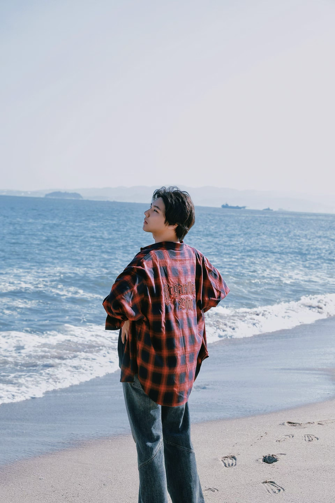

01 SUMMER GARDEN
Quiet corners and old paths. A place where time slows down and the leaves do the talking.
- DATE
- 2025.07
- NOTE
- A slow afternoon outdoors
Quiet corners and old paths. A place where time slows down and the leaves do the talking.

Salt in the air, nowhere to rush. Two views from the same afternoon—one for the horizon, one for the details.
An empty record ready for a future group of photos. Each image will keep its original proportions when added.